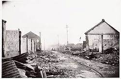

LOKASI
Bojongkokosan adalah nama desa di kecamatan parung kuda,kabupaten sukabumi,jawa barat.kabupaten pos untuk desa bojong kokosan adalah 43357.
.desa bojongkokosan merupakan pemekaran dari desa kompa karena pertumbuhan penduduk yang meningkat
ALASAN DATANGNYA SEKUTU
1.mengambil tawanan jepang yang ada di daerah sukabumi dan sekitarnya.
2.memberikan bantuan ke bandung yang saat itu terjadi pergolakan antara pemuda dan sekutu.
3.mencaga kelancaran hubungan jalan antara bogor-sukabumi-cianjur.
PENYERANGAN
pertempuran bojong kokosan berawal dari berita yang diterima dari prajurit TKR sukabumi di pos cigombong tentang kedatangan tentara inggris,
gurkha,dan NICA yang berusaha memasuki sukabumi.Kapten murad dan laskar rakyat sukabumi segera menghadang dan menduduki tempat pertahanan di
tebing utara dan selatan jalan di bojongkokosan.penghadangan ini terjadi sepanjang 81 kilometer.dimulsi dari cigombong,bogor sampai ciranjang
cianjur.
pejuang diperkuat oleh senjata rampasan milik jepang.sedangkan sekutu di perkuat oleh puluhan tank,panzer wagon, dan truk yang berisi ribuan
ribuan pasukan GURKHA.tentara TKR berhasil meloloskan diri saat terjadinya hujan deras disertai kabut.pertempuran kembali terjadi di sepanjang
jalanan bojongkokosan hingga perbatasan cianjur seperti ungkrak,selakopi,cikulu,situawi,ciseuruh hingga degung.
PENGEBOMAM
komandan sekutu mengajak runding pemimpin TKR dan pemerintah setempat yang diwakili letnan kolonel Edi Sukardi namun gencatan hanya berlangsung
1 hari pada 10 desember 1945 sekutu membombardir kecamatan cibadak.bahkan tercatat sebagai yang terbesar sepanjang perang dunia ke-2 akibatnya
73 pejuang meninggal dunia,ratusan warga sipil terluka,dan ratusan rumah hancur
HASIL
di pihak sekut mengakibatkan 50 orang meninggal dunia,100 orang luka berat,dan 30 orang menyerah sementara di pihak pejuang 73 orang meninggal